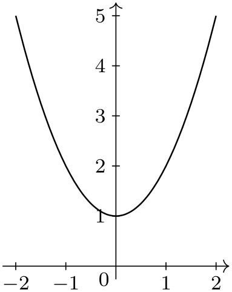
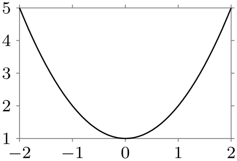

The TikZ and PGF Packages
Manual for version 3.1.10
Data Visualization
79 Introduction to Data Visualization¶
Data visualization is the process of converting data points, which typically consist of multiple numerical values, into a graphical representation. Examples include the well-known function plots, but pie charts, bar diagrams, box plots, or vector fields are also examples of data visualizations.
The data visualization subsystem of pgf takes a general, open approach to data visualization. Like everything else in pgf, there is a powerful, but not-so-easy-to-use basic layer in the data visualization system and a less flexible, but much simpler-to-use frontend layer. The present section gives an overview of the basic ideas behind the data visualization system.
79.1 Concept: Data Points¶
The most important input for a data visualization is always raw data. This data is typically present in different formats and the data visualization subsystem provides methods for reading such formats and also for defining new input formats. However, independently of the input format, we may ask what kind of data the data visualization subsystem should be able to process. For two-dimensional plots we need lists of pairs of real numbers. For a bar plot we usually need a list of numbers, possibly together with some colors and labels. For a surface plot we need a matrix of triples of real numbers. For a vector field we need even more complex data.
The data visualization subsystem makes no assumption concerning which kind of data is being processed. Instead, the whole “rendering pipeline” is centered around a concept called the data point. Conceptually, a data point is an arbitrarily complex record that represents one piece of data that should be visualized. Data points are not just coordinates in the plane or the numerical values that need to be visualized. Rather, they represent the basic units of the data that needs to be visualized.
Consider the following example: In an experiment we drive a car along a road and have different measurement instruments installed. We measure the position of the car, the time, the speed, the direction the car is heading, the acceleration, and perhaps some further values. A data point would consist of a record consisting of a timestamp together with the current position of the car (presumably two or three numbers), the speed vector (another two or three numbers), the acceleration (another two or three numbers), and perhaps the label text of the current experiment.
Data points should be “information rich”. They might even contain more information than what will actually be visualized. It is the job of the rendering pipeline to pick out the information relevant to one particular data visualization – another visualization of the same data might pick different aspects of the data points, thereby hopefully allowing new insights into the data.
Technically, there is no special data structure for data points. Rather, when a special macro called \pgfdatapoint is called, the “totality” of all currently set keys with the /data point/ prefix in the current scope forms the data point. This is both a very general approach and quite fast since no extra data structures need to be created.
79.2 Concept: Visualization Pipeline¶
The visualization pipeline is a series of actions that are performed on the to-be-visualized data. The data is presented to the visualization pipeline in the form of a long stream of complex data points. The visualization pipeline makes several passes over this stream of data points. During the first pass(es), called the survey phase(s), information is gathered about the data points such as minimal and maximal values, which can be useful for automatic fitting of the data into a given area. In the main pass over the data, called the visualization phase, the data points are actually visualized, for instance in the form of lines or points.
Like as for data points, the visualization pipeline makes no assumptions concerning what kind of visualization is desired. Indeed, one could even use it to produce a plain-text table. This flexibility is achieved by extensive use of objects and signals: When a data visualization starts, a number of signals (see Section 98.9 for an introduction to signals) are initialized. Then, numerous “visualization objects” are created that listen to these signals. These objects are all involved in processing the data points. For instance, the job of an interval mapper object is to map one attribute of a data point, such as a car’s velocity, to another, such as the \(y\)-axis of a plot. For each data point the different signals are raised in a certain order and the different visualization objects now have a chance of preparing the data point for the actual visualization. Continuing the above example, there might be a second interval mapper that takes the computed \(y\)-position and applies a logarithm to it, because a log-plot was requested. Then another mapper, this time a polar mapper might be used to map everything to polar coordinates. Following this, a plot mark visualizer might actually draw something at the computed position.
The whole idea behind the rendering pipeline is that new kinds of data visualizations can be implemented, ideally, just by adding one or two new objects to the visualization pipeline. Furthermore, different kinds of plots can be combined in novel ways in this manner, which is usually very hard to do otherwise. For instance, the visualization pipeline makes it easy to create, say, polar-semilog-box-plots. At first sight, such new kinds of plots may seem frivolous, but data visualization is all about gaining insights into the data from as many different angles as possible.
Naturally, creating new classes and objects for the rendering pipeline is not trivial, so most users will just use the existing classes, which should, thus, be as flexible as possible. But even when one only intends to use existing classes, it is still tricky to setup the pipeline correctly since the ordering is obviously important and since things like axes and ticks need to be configured and taken care of. For this reason, the frontend libraries provide preconfigured rendering pipelines so that one can simply say that a data visualization should look like a line plot with school book axes or with scientific axes, which selects a certain visualization pipeline that is appropriate for this kind of plot:

\usetikzlibrary {datavisualization.formats.functions}
\begin{tikzpicture}[scale=.7]
\datavisualization [school book axes, visualize as smooth line]
data
[format=function] {
var
x
:
interval
[-2:2];
func
y
=
\value x*\value x
+
1;
};
\end{tikzpicture}

\usetikzlibrary {datavisualization.formats.functions}
\begin{tikzpicture}[scale=.7]
\datavisualization [scientific axes, visualize as smooth line]
data
[format=function] {
var
x
:
interval
[-2:2];
func
y
=
\value x*\value x
+
1;
};
\end{tikzpicture}
One must still configure such a plot (choose styles and themes and also specify which attributes of a data point should be used), but on the whole the plot is quite simple to specify.